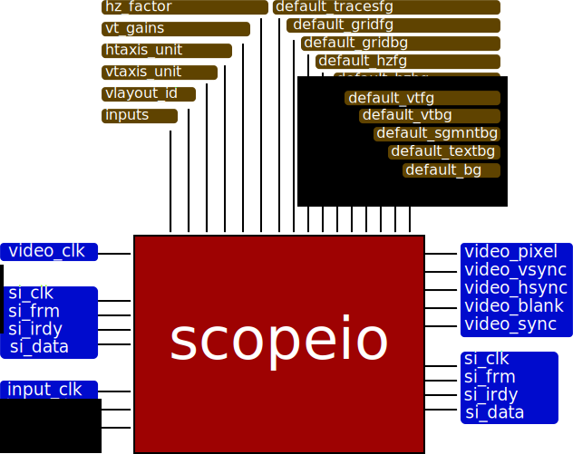

HDL4FPGA’s documentation¶
library composition¶
Manufacturer independent files¶
- library/common/align.vhd
- library/common/atof.vhd
- library/common/dpram.vhd
- library/common/pipe_le.vhd
- library/common/rom.vhd
- library/common/std.vhd
- library/mii/miirx_pre.vhd
- library/mii/mii_mem.vhd
- library/scope/scopeio.vhd
- library/scope/scopeio_channel.vhd
- library/scope/scopeio_axis.vhd
- library/scope/scopeio_gauge.vhd
- library/scope/scopeio_gpannel.vhd
- library/scope/scopeio_miirx.vhd
- library/video/cga/cgafonts.vhd
- library/video/video.vhd
- library/video/video_win.vhd
entity scopeio¶

{kind=link}
scopeio entity block diagram
Generic¶
| Parameter | Type | Description |
|---|---|---|
| inputs | natural | Number of channel inputs |
| vlayout_id | natural | Display layouts |
| vt_unit | std_logic_vector | Vertical division unit |
| hz_unit | std_logic_vector | Horizontal division unit |
| vt_gain | std_logic_vector | Vertical gains |
| hz_factor | std_logic_vector | Horizontal factors |
| default_tracesfg | std_logic_vector | Traces background colors |
| default_gridfg | std_logic_vector | Grid foreground color |
| default_gridbg | std_logic_vector | Grid background color |
| default_hzfg | std_logic_vector | Horizontal foreground color |
| default_hzbg | std_logic_vector | Horzontal background color |
| default_vtfg | std_logic_vector | Vertical foreground color |
| default_vtbg | std_logic_vector | Vertical background color |
| default_textbg | std_logic_vector | Text background color |
| default_sgmntbg | std_logic_vector | Segmanet background color |
| default_bg | std_logic_vector | Screen background color |
Ports¶
| Port | Mode Type | Description | |
|---|---|---|---|
| si_clk | in | std_logic | Serial input clock |
| si_frm | in | std_logic | Serial input frame |
| si_irdy | in | std_logic_vector | Serial input initiatior ready |
| si_data | in | std_logic_vector | Serial input data |
| so_clk | in | std_logic | Serial output clock |
| so_frm | in | std_logic | Serial output frame |
| so_irdy | in | std_logic_vector | Serial output initiatior ready |
| so_data | in | std_logic_vector | Serial output data |
| input_clk | in | std_logic | Input Channel Clocks |
| input_ena | in | std_logic | Input Channel Enable |
| input_data | in | std_logic_vector | Input Channel Samples |
| video_clk | in | std_logic | Video Clock |
| video_pixel | out | std_logic_vector | Video Pixel |
| video_vsync | out | std_logic | Video Vertical Sync |
| video_hsync | out | std_logic | Video Horizontal Sync |
| video_blank | out | std_logic | Video Blank |
| video_sync | out | std_logic | Video Sync |
Slides¶
Analizador de nueve canales en Arty¶
Prueba de escala horizontal¶
Prueba de retardo¶
Arty¶
|
ECP3 Versa Dev Kit - Lattice Semiconductor¶
|
NU HORIZONS Spartan 3A DSP¶
|
DIGILENT Nexys2¶
|
DIGILENT Spartan-3E Starter Board¶
|
DIGILENT Spartan-3 Board¶
|
ScopeIO on Digilent Starter Spartan 3¶
1 2 3 4 5 6 7 8 9 10 11 12 13 14 15 16 17 18 19 20 21 22 23 24 25 26 27 28 29 30 31 32 33 34 35 36 37 38 39 40 41 42 43 44 45 46 47 48 49 50 51 52 53 54 55 56 57 58 59 60 61 62 63 64 65 66 67 68 69 70 71 72 73 74 75 76 77 78 79 80 81 82 83 84 85 86 87 88 89 90 91 92 93 94 95 96 97 98 99 100 101 102 103 104 105 106 107 108 109 110 111 112 113 114 115 116 117 118 119 120 121 122 123 124 125 126 127 128 129 130 131 132 133 134 135 136 137 138 139 140 141 142 143 144 145 146 147 148 149 150 151 152 153 154 155 156 157 158 159 160 161 162 163 164 165 166 167 168 169 170 171 172 173 174 175 176 177 178 179 180 181 182 183 184 185 186 187 188 189 190 191 192 193 194 195 196 197 198 199 200 201 202 203 204 205 206 207 208 209 210 211 212 213 214 215 216 217 218 219 220 221 222 223 224 225 226 227 228 229 230 231 232 233 234 235 236 237 238 239 240 241 242 243 244 245 246 247 248 249 250 251 252 253 254 255 256 257 258 259 260 261 262 263 264 265 266 267 268 269 270 271 272 273 274 275 276 277 278 279 280 281 282 283 284 285 286 287 288 289 290 291 292 293 294 295 296 297 298 299 300 301 302 303 304 305 306 307 308 309 310 311 312 313 314 315 316 317 318 319 320 321 322 323 324 | -- --
-- Author(s): --
-- Miguel Angel Sagreras --
-- --
-- Copyright (C) 2015 --
-- Miguel Angel Sagreras --
-- --
-- This source file may be used and distributed without restriction provided --
-- that this copyright statement is not removed from the file and that any --
-- derivative work contains the original copyright notice and the associated --
-- disclaimer. --
-- --
-- This source file is free software; you can redistribute it and/or modify --
-- it under the terms of the GNU General Public License as published by the --
-- Free Software Foundation, either version 3 of the License, or (at your --
-- option) any later version. --
-- --
-- This source is distributed in the hope that it will be useful, but WITHOUT --
-- ANY WARRANTY; without even the implied warranty of MERCHANTABILITY or --
-- FITNESS FOR A PARTICULAR PURPOSE. See the GNU General Public License for --
-- more details at http://www.gnu.org/licenses/. --
-- --
library ieee;
use ieee.std_logic_1164.all;
use ieee.numeric_std.all;
use ieee.math_real.all;
library hdl4fpga;
use hdl4fpga.std.all;
library unisim;
use unisim.vcomponents.all;
architecture beh of s3starter is
constant inputs : natural := 1;
signal sys_clk : std_logic;
signal vga_clk : std_logic;
constant sample_size : natural := 14;
function sintab (
constant base : integer;
constant size : natural)
return integer_vector is
variable offset : natural;
variable retval : integer_vector(0 to size-1);
begin
for i in 0 to size-1 loop
offset := base + i;
retval(i) := integer(127.0*sin(2.0*MATH_PI*real((offset))/64.0));
retval(i) := 0;
if i=0 then
retval(i) := 127;
end if;
if i=400 then
retval(i) := -63;
end if;
if i=735 then
retval(i) := -63;
end if;
end loop;
return retval;
end;
signal input_addr : unsigned(12-1 downto 0);
signal input_ena : std_logic := '1';
signal input_dv : std_logic;
signal sample : std_logic_vector(sample_size-1 downto 0);
constant baudrate : natural := 115200;
signal uart_sin : std_logic;
signal uart_rxc : std_logic;
signal uart_ena : std_logic;
signal uart_rxdv : std_logic;
signal uart_rxd : std_logic_vector(8-1 downto 0);
signal vga_rgb : std_logic_vector(3-1 downto 0);
signal clk_mouse : std_logic;
signal istreamdaisy_frm : std_logic;
signal istreamdaisy_irdy : std_logic;
signal istreamdaisy_data : std_logic_vector(8-1 downto 0);
signal mousedaisy_frm : std_logic;
signal mousedaisy_irdy : std_logic;
signal mousedaisy_data : std_logic_vector(8-1 downto 0);
signal si_clk : std_logic;
signal si_frm : std_logic;
signal si_irdy : std_logic;
signal si_data : std_logic_vector(8-1 downto 0);
signal so_data : std_logic_vector(8-1 downto 0);
signal display : std_logic_vector(0 to 16-1);
signal vga_blank : std_logic;
signal vga_lck : std_logic;
type display_param is record
layout : natural;
mul : natural;
div : natural;
end record;
constant mode600p : natural := 0;
constant mode1080p : natural := 1;
constant mode600px16 : natural := 2;
type displayparam_vector is array (natural range <>) of display_param;
constant video_params : displayparam_vector(0 to 2) := (
mode600p => (layout => 1, mul => 4, div => 5),
mode1080p => (layout => 0, mul => 3, div => 1),
mode600px16 => (layout => 6, mul => 4, div => 5));
constant video_mode : natural := mode600px16;
begin
clkin_ibufg : ibufg
port map (
I => xtal,
O => sys_clk);
videodcm_e : entity hdl4fpga.dfs
generic map (
dfs_frequency_mode => "low",
dcm_per => 20.0,
dfs_mul => video_params(video_mode).mul,
dfs_div => video_params(video_mode).div)
port map(
dcm_rst => button(0),
dcm_clk => sys_clk,
dfs_clk => vga_clk,
dcm_lck => vga_lck);
input_ena <= '1'; --uart_ena;
process (sys_clk)
begin
if rising_edge(sys_clk) then
if input_ena='1' then
input_addr <= input_addr + 1;
end if;
end if;
end process;
samples_e : entity hdl4fpga.rom
generic map (
latency => 2,
bitrom => to_bitrom(sintab(base => 0, size => 2**input_addr'length), sample_size))
port map (
clk => sys_clk,
addr => std_logic_vector(input_addr),
data => sample);
ena_e : entity hdl4fpga.align
generic map (
n => 1,
d => (0 to 0 => 2))
port map (
clk => sys_clk,
di(0) => input_ena,
do(0) => input_dv);
process (sys_clk)
constant max_count : natural := (50*10**6+16*baudrate/2)/(16*baudrate);
variable cntr : unsigned(0 to unsigned_num_bits(max_count-1)-1) := (others => '0');
begin
if rising_edge(sys_clk) then
if cntr >= max_count-1 then
uart_ena <= '1';
cntr := (others => '0');
else
uart_ena <= '0';
cntr := cntr + 1;
end if;
end if;
end process;
uart_sin <= rs232_rxd;
uart_rxc <= sys_clk;
uartrx_e : entity hdl4fpga.uart_rx
generic map (
baudrate => baudrate,
clk_rate => 16*baudrate)
port map (
uart_sin => uart_sin,
uart_rxc => uart_rxc,
uart_ena => uart_ena,
uart_rxdv => uart_rxdv,
uart_rxd => uart_rxd);
istreamdaisy_e : entity hdl4fpga.scopeio_istreamdaisy
generic map (
istream_esc => std_logic_vector(to_unsigned(character'pos('\'), 8)),
istream_eos => std_logic_vector(to_unsigned(character'pos(NUL), 8)))
port map (
stream_clk => uart_rxc,
stream_dv => uart_rxdv,
stream_data => uart_rxd,
chaini_data => uart_rxd,
chaino_frm => istreamdaisy_frm,
chaino_irdy => istreamdaisy_irdy,
chaino_data => istreamdaisy_data);
-- From EMARD's ULX3S code
ps2mouse_b : block
constant C_tracesfg_gui: std_logic_vector(0 to inputs*vga_rgb'length-1) := b"111"; -- RGB
signal rst : std_logic;
signal clk_mouse : std_logic;
signal clkmouse_ena : std_logic;
begin
rst <= not vga_lck;
clk_mouse <= sys_clk;
process (sys_clk)
begin
if rising_edge(sys_clk) then
clkmouse_ena <= not clkmouse_ena;
end if;
end process;
ps2mouse2daisy_e: entity hdl4fpga.scopeio_ps2mouse2daisy
generic map(
C_inputs => inputs,
C_tracesfg => C_tracesfg_gui,
vlayout_id => video_params(video_mode).layout
)
port map (
clk => clk_mouse,
clk_ena => clkmouse_ena,
ps2m_reset => rst,
ps2m_clk => ps2_clk,
ps2m_dat => ps2_data,
-- daisy input
chaini_frm => istreamdaisy_frm,
chaini_irdy => istreamdaisy_irdy,
chaini_data => istreamdaisy_data,
-- daisy output
chaino_frm => mousedaisy_frm,
chaino_irdy => mousedaisy_irdy,
chaino_data => mousedaisy_data
);
si_frm <= mousedaisy_frm;
si_irdy <= mousedaisy_irdy;
si_data <= mousedaisy_data;
end block;
si_clk <= sys_clk;
scopeio_e : entity hdl4fpga.scopeio
generic map (
test => true,
axis_unit => std_logic_vector(to_unsigned(25,5)),
inputs => inputs,
vlayout_id => video_params(video_mode).layout,
default_tracesfg => b"1_1_1",
default_gridfg => b"1_0_0",
default_gridbg => b"0_0_0",
default_hzfg => b"1_1_1",
default_hzbg => b"0_0_1",
default_vtfg => b"1_1_1",
default_vtbg => b"0_0_1",
default_textbg => b"0_0_0",
default_sgmntbg => b"1_1_1",
default_bg => b"0_0_0")
port map (
si_clk => si_clk,
si_frm => si_frm,
si_irdy => si_irdy,
si_data => si_data,
so_data => so_data,
input_clk => sys_clk,
input_ena => input_dv,
input_data => sample,
video_clk => vga_clk,
video_pixel => vga_rgb,
video_hsync => vga_hsync,
video_vsync => vga_vsync,
video_blank => vga_blank);
led(7 downto 2) <= (others => 'Z');
led(1) <= uart_rxdv;
process(uart_rxc, button(0))
begin
if button(0)='1' then
led(0) <= '0';
elsif rising_edge(uart_rxc) then
if uart_rxdv='1' then
led(0) <= '1';
display <= std_logic_vector(resize(unsigned(uart_rxd), display'length));
end if;
end if;
end process;
seg7_e : entity hdl4fpga.seg7
generic map (
refresh => 2*8)
port map (
clk => uart_rxc,
data => display,
segment_a => s3s_segment_a,
segment_b => s3s_segment_b,
segment_c => s3s_segment_c,
segment_d => s3s_segment_d,
segment_e => s3s_segment_e,
segment_f => s3s_segment_f,
segment_g => s3s_segment_g,
segment_dp => s3s_segment_dp,
display_turnon => s3s_anodes);
vga_red <= vga_rgb(2);
vga_green <= vga_rgb(1);
vga_blue <= vga_rgb(0);
expansion_a2 <= (others => 'Z');
rs232_txd <= 'Z';
ps2_clk <= 'Z';
ps2_data <= 'Z';
end;
|
Archivos de VHDL¶
Package ScopeIO¶
1 2 3 4 5 6 7 8 9 10 11 12 13 14 15 16 17 18 19 20 21 22 23 24 25 26 27 28 29 30 31 32 33 34 35 36 37 38 39 40 41 42 43 44 45 46 47 48 49 50 51 52 53 54 55 56 57 58 59 60 61 62 63 64 65 66 67 68 69 70 71 72 73 74 75 76 77 78 79 80 81 82 83 84 85 86 87 88 89 90 91 92 93 94 95 96 97 98 99 100 101 102 103 104 105 106 107 108 109 110 111 112 113 114 115 116 117 118 119 120 121 122 123 124 125 126 127 128 129 130 131 132 133 134 135 136 137 138 139 140 141 142 143 144 145 146 147 148 149 150 151 152 153 154 155 156 157 158 159 160 161 162 163 164 165 166 167 168 169 170 171 172 173 174 175 176 177 178 179 180 181 182 183 184 185 186 187 188 189 190 191 192 193 194 195 196 197 198 199 200 201 202 203 204 205 206 207 208 209 210 211 212 213 214 215 216 217 218 219 220 221 222 223 224 225 226 227 228 229 230 231 232 233 234 235 236 237 238 239 240 241 242 243 244 245 246 247 248 249 250 251 252 253 254 255 256 257 258 259 260 261 262 263 264 265 266 267 268 269 270 271 272 273 274 275 276 277 278 279 280 281 282 283 284 285 286 287 288 289 290 291 292 293 294 295 296 297 298 299 300 301 302 303 304 305 306 307 308 309 310 311 312 313 314 315 316 317 318 319 320 321 322 323 324 325 326 327 328 329 330 331 332 333 334 335 336 337 338 339 340 341 342 343 344 345 346 347 348 349 350 351 352 353 354 355 356 357 358 359 360 361 362 363 364 365 366 367 368 369 370 371 372 373 374 375 376 377 378 379 380 381 382 383 384 385 386 387 388 389 390 391 392 393 394 395 396 397 398 399 400 401 402 403 404 405 406 407 408 409 410 411 412 413 414 415 416 417 418 419 420 421 422 423 424 425 426 427 428 429 430 431 432 433 434 435 436 437 438 439 440 441 442 443 444 445 446 447 448 449 450 451 452 453 454 455 456 457 458 459 460 461 462 463 464 465 466 467 468 469 470 471 472 473 474 475 476 477 478 479 480 481 482 483 484 485 486 487 488 489 490 491 492 493 494 495 496 497 498 499 500 501 502 503 504 505 506 507 508 509 510 511 512 513 514 515 516 517 518 519 520 521 522 523 524 525 526 527 528 529 530 531 532 533 534 535 536 537 538 539 540 541 542 543 544 545 546 547 548 549 550 551 552 553 554 555 556 557 558 559 560 561 562 563 564 565 566 567 568 569 570 571 572 573 574 575 576 577 578 579 580 581 582 583 584 585 586 587 588 589 590 591 592 593 594 595 596 597 598 599 600 601 602 603 604 605 606 607 608 609 610 611 612 613 614 615 616 617 618 619 620 621 622 623 624 625 626 627 628 629 630 631 632 633 634 635 636 637 638 639 640 641 642 643 644 645 646 647 648 649 650 651 652 653 654 655 656 657 658 659 660 661 662 663 664 665 666 667 668 669 670 671 672 673 674 675 676 677 678 679 680 681 682 683 684 685 686 687 688 689 690 691 692 693 694 695 696 697 698 699 700 701 702 703 704 705 706 707 708 709 710 711 712 713 714 715 716 717 718 719 720 721 722 723 724 725 726 727 728 729 730 731 732 733 | -- --
-- Author(s): --
-- Miguel Angel Sagreras --
-- --
-- Copyright (C) 2015 --
-- Miguel Angel Sagreras --
-- --
-- This source file may be used and distributed without restriction provided --
-- that this copyright statement is not removed from the file and that any --
-- derivative work contains the original copyright notice and the associated --
-- disclaimer. --
-- --
-- This source file is free software; you can redistribute it and/or modify --
-- it under the terms of the GNU General Public License as published by the --
-- Free Software Foundation, either version 3 of the License, or (at your --
-- option) any later version. --
-- --
-- This source is distributed in the hope that it will be useful, but WITHOUT --
-- ANY WARRANTY; without even the implied warranty of MERCHANTABILITY or --
-- FITNESS FOR A PARTICULAR PURPOSE. See the GNU General Public License for --
-- more details at http://www.gnu.org/licenses/. --
-- --
library ieee;
use ieee.std_logic_1164.all;
use ieee.numeric_std.all;
library hdl4fpga;
use hdl4fpga.std.all;
use hdl4fpga.videopkg.all;
package scopeiopkg is
constant max_inputs : natural := 64;
constant axisy_backscale : natural := 0;
constant axisx_backscale : natural := 1;
constant max_pixelsize : natural := 24;
type border is (left, right, top, bottom);
type rotate is (ccw0, ccw90, ccw270);
type direction is (horizontal, vertical);
type gap_vector is array (direction) of natural;
type margin_vector is array (border) of natural;
type style is record
gap : gap_vector;
margin : margin_vector;
end record;
type display_layout is record
display_width : natural; -- Display's width
display_height : natural; -- Display's height
num_of_segments : natural; -- Number of segments to display
division_size : natural; -- Length in pixels
grid_width : natural; -- Width of the grid in divisions
grid_height : natural; -- Width of the grid in divisions
axis_fontsize : natural; -- Axis font size
hzaxis_height : natural; -- Height of the horizontal axis
vtaxis_width : natural; -- Width of the vetical axis
vttick_rotate : rotate; -- Vertical label rotating
textbox_width : natural; -- Width of the text box
main_margin : margin_vector; -- Main Margin
main_gap : gap_vector; -- Main Padding
sgmnt_margin : margin_vector; -- Segment Margin
sgmnt_gap : gap_vector; -- Segment Padding
end record;
constant sd600 : natural := 0;
constant hd720 : natural := 1;
constant hd1080 : natural := 2;
constant vesa1280x1024: natural := 3;
constant sd600x16 : natural := 4;
constant sd600x16fs : natural := 5;
constant oled96x64 : natural := 6;
type displaylayout_vector is array (natural range <>) of display_layout;
constant displaylayout_table : displaylayout_vector := (
sd600 => (
display_width => 800,
display_height => 600,
num_of_segments => 2,
division_size => 32,
grid_width => 15*32+1,
grid_height => 8*32+1,
axis_fontsize => 8,
hzaxis_height => 8,
vtaxis_width => 1*8,
vttick_rotate => ccw90,
textbox_width => 33*8,
main_margin => (left => 3, top => 23, others => 0),
main_gap => (vertical => 16, others => 0),
sgmnt_margin => (top => 2, bottom => 2, others => 1),
sgmnt_gap => (horizontal => 1, others => 0)),
sd600x16 => (
display_width => 96,
display_height => 64,
num_of_segments => 1,
division_size => 8,
grid_width => 12*8,
grid_height => 8*8,
axis_fontsize => 8,
hzaxis_height => 0,
vtaxis_width => 0,
vttick_rotate => ccw90,
textbox_width => 0,
main_margin => (others => 0),
main_gap => (others => 0),
sgmnt_margin => (others => 0),
sgmnt_gap => (others => 0)),
sd600x16fs => (
display_width => 800,
display_height => 600,
num_of_segments => 4,
division_size => 16,
grid_width => 46*16,
grid_height => 8*16,
axis_fontsize => 8,
hzaxis_height => 8,
vtaxis_width => 6*8,
vttick_rotate => ccw0,
textbox_width => 0,
main_margin => (others => 0),
main_gap => (others => 4),
sgmnt_margin => (others => 0),
sgmnt_gap => (others => 0)),
oled96x64 => (
display_width => 96,
display_height => 64,
num_of_segments => 1,
division_size => 8,
grid_width => 11*8+1,
grid_height => 7*8+1,
axis_fontsize => 8,
hzaxis_height => 7,
vtaxis_width => 7,
vttick_rotate => ccw90,
textbox_width => 0, -- no textbox
main_margin => (others => 0),
main_gap => (others => 0),
sgmnt_margin => (others => 0),
sgmnt_gap => (others => 0)),
hd720 => (
display_width => 1280,
display_height => 720,
num_of_segments => 3,
division_size => 32,
grid_width => 30*32+1,
grid_height => 8*32+1,
axis_fontsize => 8,
hzaxis_height => 8,
vtaxis_width => 6*8,
vttick_rotate => ccw0,
textbox_width => 33*8,
main_margin => (others => 0),
main_gap => (others => 0),
sgmnt_margin => (others => 0),
sgmnt_gap => (others => 0)),
vesa1280x1024 => (
display_width => 1280,
display_height => 720,
num_of_segments => 4,
division_size => 32,
grid_width => 30*32+1,
grid_height => 8*32+1,
axis_fontsize => 8,
hzaxis_height => 8,
vtaxis_width => 6*8,
vttick_rotate => ccw0,
textbox_width => 33*8,
main_margin => (others => 0),
main_gap => (others => 0),
sgmnt_margin => (others => 0),
sgmnt_gap => (others => 0)),
hd1080 => (
display_width => 1920,
display_height => 1080,
num_of_segments => 4,
division_size => 32,
grid_width => 50*32+1,
grid_height => 8*32+1,
axis_fontsize => 8,
hzaxis_height => 8,
vtaxis_width => 6*8,
vttick_rotate => ccw0,
textbox_width => 33*8,
main_margin => (top => 5, left => 1, others => 0),
main_gap => (others => 1),
sgmnt_margin => (others => 1),
sgmnt_gap => (horizontal => 1, others => 0)));
type mode_layout is record
mode_id : natural;
layout_id : natural;
end record;
type modelayout_vector is array(natural range <>) of mode_layout;
constant video_description : modelayout_vector := (
0 => (mode_id => pclk148_50m1920x1080Rat60, layout_id => hd1080),
1 => (mode_id => pclk38_25m800x600Cat60, layout_id => sd600),
2 => (mode_id => pclk75_00m1920x1080Rat30, layout_id => hd1080),
3 => (mode_id => pclk75_00m1280x768Rat60, layout_id => hd720),
4 => (mode_id => pclk108_00m1280x1024Cat60, layout_id => vesa1280x1024),
5 => (mode_id => pclk38_25m800x600Cat60, layout_id => sd600x16),
6 => (mode_id => pclk38_25m800x600Cat60, layout_id => sd600x16fs),
7 => (mode_id => pclk38_25m96x64Rat60, layout_id => oled96x64));
constant vtaxis_boxid : natural := 0;
constant grid_boxid : natural := 1;
constant text_boxid : natural := 2;
constant hzaxis_boxid : natural := 3;
function axis_fontsize (constant layout : display_layout) return natural;
function hzaxis_x (constant layout : display_layout) return natural;
function hzaxis_y (constant layout : display_layout) return natural;
function hzaxis_width (constant layout : display_layout) return natural;
function hzaxis_height (constant layout : display_layout) return natural;
function vtaxis_y (constant layout : display_layout) return natural;
function vtaxis_x (constant layout : display_layout) return natural;
function vtaxis_width (constant layout : display_layout) return natural;
function vtaxis_height (constant layout : display_layout) return natural;
function vtaxis_tickrotate (constant layout : display_layout) return rotate;
function grid_x (constant layout : display_layout) return natural;
function grid_y (constant layout : display_layout) return natural;
function grid_width (constant layout : display_layout) return natural;
function grid_height (constant layout : display_layout) return natural;
function grid_divisionsize (constant layout : display_layout) return natural;
function textbox_x (constant layout : display_layout) return natural;
function textbox_y (constant layout : display_layout) return natural;
function textbox_width (constant layout : display_layout) return natural;
function textbox_height (constant layout : display_layout) return natural;
function sgmnt_width (constant layout : display_layout) return natural;
function sgmnt_height (constant layout : display_layout) return natural;
function sgmnt_xedges (constant layout : display_layout) return natural_vector;
function sgmnt_yedges (constant layout : display_layout) return natural_vector;
function sgmnt_boxon (
constant box_id : natural;
constant x_div : std_logic_vector;
constant y_div : std_logic_vector;
constant layout : display_layout)
return std_logic;
function main_width (constant layout : display_layout) return natural;
function main_height (constant layout : display_layout) return natural;
function main_xedges (constant layout : display_layout) return natural_vector;
function main_yedges (constant layout : display_layout) return natural_vector;
function main_boxon (
constant box_id : natural;
constant x_div : std_logic_vector;
constant y_div : std_logic_vector;
constant layout : display_layout)
return std_logic;
constant rid_hzaxis : std_logic_vector := x"10";
constant rid_palette : std_logic_vector := x"11";
constant rid_trigger : std_logic_vector := x"12";
constant rid_gain : std_logic_vector := x"13";
constant rid_vtaxis : std_logic_vector := x"14";
constant rid_pointer : std_logic_vector := x"15";
constant chanid_maxsize : natural := unsigned_num_bits(max_inputs-1);
function bitfield (
constant bf_rgtr : std_logic_vector;
constant bf_id : natural;
constant bf_dscptr : natural_vector)
return std_logic_vector;
constant vtoffset_maxsize : natural := 13;
constant vtoffset_id : natural := 0;
constant vtchanid_id : natural := 1;
constant vtoffset_bf : natural_vector := (
vtoffset_id => vtoffset_maxsize,
vtchanid_id => chanid_maxsize);
constant hzoffset_maxsize : natural := 16;
constant hzscale_maxsize : natural := 4;
constant hzoffset_id : natural := 0;
constant hzscale_id : natural := 1;
constant hzoffset_bf : natural_vector := (
hzoffset_id => hzoffset_maxsize,
hzscale_id => hzscale_maxsize);
constant paletteid_maxsize : natural := unsigned_num_bits(max_inputs+9-1);
constant palettecolor_maxsize : natural := 24;
constant paletteid_id : natural := 0;
constant palettecolor_id : natural := 1;
constant palette_bf : natural_vector := (
paletteid_id => paletteid_maxsize,
palettecolor_id => palettecolor_maxsize);
constant trigger_ena_id : natural := 0;
constant trigger_edge_id : natural := 1;
constant trigger_level_id : natural := 2;
constant trigger_chanid_id : natural := 3;
constant triggerlevel_maxsize : natural := 9;
constant trigger_bf : natural_vector := (
trigger_ena_id => 1,
trigger_edge_id => 1,
trigger_level_id => triggerlevel_maxsize,
trigger_chanid_id => chanid_maxsize);
constant gainid_maxsize : natural := 4;
constant gainid_id : natural := 0;
constant gainchanid_id : natural := 1;
constant gain_bf : natural_vector := (
gainid_id => gainid_maxsize,
gainchanid_id => chanid_maxsize);
constant pointerx_maxsize : natural := 11;
constant pointery_maxsize : natural := 11;
constant pointerx_id : natural := 0;
constant pointery_id : natural := 1;
constant pointer_bf : natural_vector := (
pointery_id => pointery_maxsize,
pointerx_id => pointerx_maxsize);
end;
package body scopeiopkg is
function pos(
constant val : natural)
return natural is
begin
if val > 0 then
return 1;
end if;
return 0;
end;
function boxes_sides(
constant sides : natural_vector;
constant margin_start : natural := 0;
constant margin_end : natural := 0;
constant gap : natural := 0)
return natural_vector is
variable retval : natural_vector(0 to sides'length+(sides'length-1)*gap+pos(margin_start)+pos(margin_end)-1);
variable n : natural;
begin
n := 0;
retval(n*(pos(gap)+1)) := margin_start;
retval(pos(margin_start)+n*(pos(gap)+1)) := retval(n*(pos(gap+1))) + sides(0);
for i in 0 to sides'length-2 loop
if sides(i)/=0 then
retval(pos(margin_start)+n*(pos(gap)+1)+1) := retval(pos(margin_start)+n*(pos(gap)+1)) + gap;
n := n + 1;
end if;
retval(pos(margin_start)+n*(pos(gap)+1)) := retval(pos(margin_start)+(n-1)*(pos(gap)+1)+1) + sides(i+1);
end loop;
if sides(sides'right)/=0 then
retval(pos(margin_start)+pos(margin_end)+n*(pos(gap)+1)) := retval(pos(margin_start)+n*(pos(gap)+1)) + margin_end;
else
n := n - 1;
end if;
return retval(0 to n+n*pos(gap)+pos(margin_start)+pos(margin_end));
end;
function grid_x (
constant layout : display_layout)
return natural is
variable retval : natural := 0;
begin
retval := retval + vtaxis_x(layout);
retval := retval + vtaxis_width(layout);
retval := retval + layout.sgmnt_gap(horizontal);
return retval;
end;
function grid_y (
constant layout : display_layout)
return natural is
begin
return layout.sgmnt_margin(top);
end;
function grid_width (
constant layout : display_layout)
return natural is
begin
return layout.grid_width;
end;
function grid_height (
constant layout : display_layout)
return natural is
begin
return layout.grid_height;
end;
function grid_divisionsize (
constant layout : display_layout)
return natural is
begin
return layout.division_size;
end;
function axis_fontsize (
constant layout : display_layout)
return natural is
begin
return layout.axis_fontsize;
end;
function vtaxis_x (
constant layout : display_layout)
return natural is
begin
return layout.sgmnt_margin(left);
end;
function vtaxis_y (
constant layout : display_layout)
return natural is
begin
return layout.sgmnt_margin(top);
end;
function vtaxis_width (
constant layout : display_layout)
return natural is
begin
return layout.vtaxis_width;
end;
function vtaxis_height (
constant layout : display_layout)
return natural is
begin
return grid_height(layout);
end;
function vtaxis_tickrotate (
constant layout : display_layout)
return rotate is
begin
return layout.vttick_rotate;
end;
function textbox_x (
constant layout : display_layout)
return natural is
variable retval : natural := 0;
begin
retval := retval + grid_x(layout);
retval := retval + grid_width(layout);
retval := retval + layout.sgmnt_gap(horizontal);
return retval;
end;
function textbox_y (
constant layout : display_layout)
return natural is
begin
return layout.sgmnt_margin(top);
end;
function textbox_width (
constant layout : display_layout)
return natural is
begin
return layout.textbox_width;
end;
function textbox_height (
constant layout : display_layout)
return natural is
begin
return layout.grid_height;
end;
function hzaxis_x (
constant layout : display_layout)
return natural is
begin
return grid_x(layout);
end;
function hzaxis_y (
constant layout : display_layout)
return natural is
variable retval : natural := 0;
begin
retval := retval + grid_y(layout);
retval := retval + grid_height(layout);
retval := retval + layout.sgmnt_gap(vertical);
return retval;
end;
function hzaxis_width (
constant layout : display_layout)
return natural is
begin
return grid_width(layout);
end;
function hzaxis_height (
constant layout : display_layout)
return natural is
begin
return layout.hzaxis_height;
end;
function sgmnt_height (
constant layout : display_layout)
return natural is
variable retval : natural := 0;
begin
retval := retval + layout.sgmnt_margin(top);
retval := retval + grid_height(layout);
retval := retval + layout.sgmnt_gap(vertical);
retval := retval + layout.hzaxis_height;
retval := retval + layout.sgmnt_margin(bottom);
return retval;
end;
function sgmnt_width (
constant layout : display_layout)
return natural is
variable retval : natural := 0;
begin
retval := retval + layout.sgmnt_margin(left);
retval := retval + layout.vtaxis_width;
retval := retval + layout.sgmnt_gap(horizontal);
retval := retval + grid_width(layout);
retval := retval + layout.sgmnt_gap(horizontal);
retval := retval + layout.textbox_width;
retval := retval + layout.sgmnt_margin(right);
return retval;
end;
function sgmnt_xedges(
constant layout : display_layout)
return natural_vector is
begin
return to_edges(boxes_sides(
sides => (
vtaxis_boxid => vtaxis_width(layout),
grid_boxid => grid_width(layout),
text_boxid => textbox_width(layout)),
margin_start => layout.sgmnt_margin(left),
margin_end => layout.sgmnt_margin(right),
gap => layout.sgmnt_gap(horizontal)));
end;
function sgmnt_yedges(
constant layout : display_layout)
return natural_vector is
begin
return to_edges(boxes_sides(
sides => (
0 => grid_height(layout),
1 => hzaxis_height(layout)),
margin_start => layout.sgmnt_margin(top),
margin_end => layout.sgmnt_margin(bottom),
gap => layout.sgmnt_gap(vertical)));
end;
function sgmnt_boxon (
constant box_id : natural;
constant x_div : std_logic_vector;
constant y_div : std_logic_vector;
constant layout : display_layout)
return std_logic is
constant x_sides : natural_vector := (
vtaxis_boxid => vtaxis_width(layout),
grid_boxid => grid_width(layout),
text_boxid => textbox_width(layout),
hzaxis_boxid => grid_width(layout));
constant y_sides : natural_vector := (
vtaxis_boxid => vtaxis_height(layout),
grid_boxid => grid_height(layout),
text_boxid => textbox_height(layout),
hzaxis_boxid => hzaxis_height(layout));
variable retval : std_logic;
variable x_margin : natural;
variable y_margin : natural;
variable x_gap : natural;
variable y_gap : natural;
function lookup (
constant id : natural;
constant sides : natural_vector)
return natural is
variable div : natural;
begin
div := 0;
for i in 0 to id-1 loop
if sides(i) /= 0 then
div := div + 1;
end if;
end loop;
return div;
end;
begin
retval := '0';
x_margin := pos(layout.sgmnt_margin(left));
y_margin := pos(layout.sgmnt_margin(top));
x_gap := pos(layout.sgmnt_gap(horizontal));
y_gap := pos(layout.sgmnt_gap(vertical));
case box_id is
when vtaxis_boxid | grid_boxid | text_boxid =>
if x_sides(box_id)/=0 then
retval := setif(unsigned(y_div)=(0*(y_gap+1)+y_margin) and unsigned(x_div)=(lookup(box_id, x_sides)*(x_gap+1)+x_margin));
end if;
when hzaxis_boxid =>
if y_sides(hzaxis_boxid)/=0 then
retval := setif(unsigned(y_div)=(1*(y_gap+1)+y_margin) and unsigned(x_div)=(lookup(grid_boxid, x_sides)*(x_gap+1)+x_margin));
end if;
when others =>
retval := '0';
end case;
return retval;
end;
function main_width (
constant layout : display_layout)
return natural is
begin
return layout.display_width;
end;
function main_height (
constant layout : display_layout)
return natural is
begin
return layout.display_height;
end;
function main_xedges(
constant layout : display_layout)
return natural_vector is
constant sides : natural_vector := boxes_sides(
sides => (0 => sgmnt_width(layout)),
margin_start => layout.main_margin(left),
margin_end => layout.main_margin(right),
gap => layout.main_gap(horizontal));
begin
assert sides(sides'right)<=main_width(layout)
report "Boxes' Width sum up cannot be greater than Display's Width"
severity FAILURE;
return to_edges(sides);
end;
function main_yedges(
constant layout : display_layout)
return natural_vector is
constant sides : natural_vector := boxes_sides(
sides => (0 to layout.num_of_segments-1 => sgmnt_height(layout)),
margin_start => layout.main_margin(top),
margin_end => layout.main_margin(bottom),
gap => layout.main_gap(vertical));
begin
assert sides(sides'right)<=main_height(layout)
report "Boxes' Height sum up cannot be greater than Display's Height"
severity FAILURE;
return to_edges(sides);
end;
function main_boxon (
constant box_id : natural;
constant x_div : std_logic_vector;
constant y_div : std_logic_vector;
constant layout : display_layout)
return std_logic is
variable x_margin : natural;
variable y_margin : natural;
variable x_gap : natural;
variable y_gap : natural;
begin
x_margin := pos(layout.main_margin(left));
y_margin := pos(layout.main_margin(top));
x_gap := pos(layout.main_gap(horizontal));
y_gap := pos(layout.main_gap(vertical));
return setif(unsigned(y_div)=box_id*(y_gap+1)+y_margin and unsigned(x_div)=0*(x_gap+1)+x_margin);
end;
function bitfield (
constant bf_rgtr : std_logic_vector;
constant bf_id : natural;
constant bf_dscptr : natural_vector)
return std_logic_vector is
variable retval : unsigned(bf_rgtr'length-1 downto 0);
variable dscptr : natural_vector(0 to bf_dscptr'length-1);
begin
dscptr := bf_dscptr;
retval := unsigned(bf_rgtr);
if bf_rgtr'left > bf_rgtr'right then
for i in bf_dscptr'range loop
if i=bf_id then
return std_logic_vector(retval(bf_dscptr(i)-1 downto 0));
end if;
retval := retval ror bf_dscptr(i);
end loop;
else
for i in bf_dscptr'range loop
retval := retval rol bf_dscptr(i);
if i=bf_id then
return std_logic_vector(retval(bf_dscptr(i)-1 downto 0));
end if;
end loop;
end if;
return (0 to 0 => '-');
end;
end;
|
ScopeIO¶
1 2 3 4 5 6 7 8 9 10 11 12 13 14 15 16 17 18 19 20 21 22 23 24 25 26 27 28 29 30 31 32 33 34 35 36 37 38 39 40 41 42 43 44 45 46 47 48 49 50 51 52 53 54 55 56 57 58 59 60 61 62 63 64 65 66 67 68 69 70 71 72 73 74 75 76 77 78 79 80 81 82 83 84 85 86 87 88 89 90 91 92 93 94 95 96 97 98 99 100 101 102 103 104 105 106 107 108 109 110 111 112 113 114 115 116 117 118 119 120 121 122 123 124 125 126 127 128 129 130 131 132 133 134 135 136 137 138 139 140 141 142 143 144 145 146 147 148 149 150 151 152 153 154 155 156 157 158 159 160 161 162 163 164 165 166 167 168 169 170 171 172 173 174 175 176 177 178 179 180 181 182 183 184 185 186 187 188 189 190 191 192 193 194 195 196 197 198 199 200 201 202 203 204 205 206 207 208 209 210 211 212 213 214 215 216 217 218 219 220 221 222 223 224 225 226 227 228 229 230 231 232 233 234 235 236 237 238 239 240 241 242 243 244 245 246 247 248 249 250 251 252 253 254 255 256 257 258 259 260 261 262 263 264 265 266 267 268 269 270 271 272 273 274 275 276 277 278 279 280 281 282 283 284 285 286 287 288 289 290 291 292 293 294 295 296 297 298 299 300 301 302 303 304 305 306 307 308 309 310 311 312 313 314 315 316 317 318 319 320 321 322 323 324 325 326 327 328 329 330 331 332 333 334 335 336 337 338 339 340 341 342 343 344 345 346 347 348 349 350 351 352 353 354 355 356 357 358 359 360 361 362 363 364 365 366 367 368 369 370 371 372 373 374 375 376 377 378 379 380 381 382 383 384 385 386 387 388 389 390 391 392 393 394 395 396 397 398 399 400 401 402 403 404 405 406 407 | -- --
-- Author(s): --
-- Miguel Angel Sagreras --
-- --
-- Copyright (C) 2015 --
-- Miguel Angel Sagreras --
-- --
-- This source file may be used and distributed without restriction provided --
-- that this copyright statement is not removed from the file and that any --
-- derivative work contains the original copyright notice and the associated --
-- disclaimer. --
-- --
-- This source file is free software; you can redistribute it and/or modify --
-- it under the terms of the GNU General Public License as published by the --
-- Free Software Foundation, either version 3 of the License, or (at your --
-- option) any later version. --
-- --
-- This source is distributed in the hope that it will be useful, but WITHOUT --
-- ANY WARRANTY; without even the implied warranty of MERCHANTABILITY or --
-- FITNESS FOR A PARTICULAR PURPOSE. See the GNU General Public License for --
-- more details at http://www.gnu.org/licenses/. --
-- --
library ieee;
use ieee.std_logic_1164.all;
use ieee.numeric_std.all;
library hdl4fpga;
use hdl4fpga.std.all;
use hdl4fpga.scopeiopkg.all;
entity scopeio is
generic (
test : boolean := false;
vlayout_id : natural;
max_delay : natural := 2**14;
axis_unit : std_logic_vector := std_logic_vector(to_unsigned(25,5)); -- 25.0 each 128 samples
min_storage : natural := 256; -- samples, storage size will be equal or larger than this
inputs : natural;
vt_gains : natural_vector := (
0 => 2**17/(2**(0+0)*5**(0+0)), 1 => 2**17/(2**(1+0)*5**(0+0)), 2 => 2**17/(2**(2+0)*5**(0+0)), 3 => 2**17/(2**(0+0)*5**(1+0)),
4 => 2**17/(2**(0+1)*5**(0+1)), 5 => 2**17/(2**(1+1)*5**(0+1)), 6 => 2**17/(2**(2+1)*5**(0+1)), 7 => 2**17/(2**(0+1)*5**(1+1)),
8 => 2**17/(2**(0+2)*5**(0+2)), 9 => 2**17/(2**(1+2)*5**(0+2)), 10 => 2**17/(2**(2+2)*5**(0+2)), 11 => 2**17/(2**(0+2)*5**(1+2)),
12 => 2**17/(2**(0+3)*5**(0+3)), 13 => 2**17/(2**(1+3)*5**(0+3)), 14 => 2**17/(2**(2+3)*5**(0+3)), 15 => 2**17/(2**(0+3)*5**(1+3)));
hz_factors : natural_vector := (
0 => 2**(0+0)*5**(0+0), 1 => 2**(1+0)*5**(0+0), 2 => 2**(2+0)*5**(0+0), 3 => 2**(0+0)*5**(1+0),
4 => 2**(0+1)*5**(0+1), 5 => 2**(1+1)*5**(0+1), 6 => 2**(2+1)*5**(0+1), 7 => 2**(0+1)*5**(1+1),
8 => 2**(0+2)*5**(0+2), 9 => 2**(1+2)*5**(0+2), 10 => 2**(2+2)*5**(0+2), 11 => 2**(0+2)*5**(1+2),
12 => 2**(0+3)*5**(0+3), 13 => 2**(1+3)*5**(0+3), 14 => 2**(2+3)*5**(0+3), 15 => 2**(0+3)*5**(1+3));
default_tracesfg : std_logic_vector := b"1_1_1";
default_gridfg : std_logic_vector := b"1_0_0";
default_gridbg : std_logic_vector := b"0_0_0";
default_hzfg : std_logic_vector := b"1_1_1";
default_hzbg : std_logic_vector := b"0_0_1";
default_vtfg : std_logic_vector := b"1_1_1";
default_vtbg : std_logic_vector := b"0_0_1";
default_textbg : std_logic_vector := b"0_0_0";
default_sgmntbg : std_logic_vector := b"0_1_1";
default_bg : std_logic_vector := b"1_1_1");
port (
si_clk : in std_logic := '-';
si_frm : in std_logic := '0';
si_irdy : in std_logic := '0';
si_data : in std_logic_vector;
so_clk : in std_logic := '-';
so_frm : out std_logic;
so_irdy : out std_logic;
so_trdy : in std_logic := '0';
so_data : out std_logic_vector;
input_clk : in std_logic;
input_ena : in std_logic := '1';
input_data : in std_logic_vector;
video_clk : in std_logic;
video_pixel : out std_logic_vector;
video_hsync : out std_logic;
video_vsync : out std_logic;
video_blank : out std_logic;
video_sync : out std_logic);
constant hzoffset_bits : natural := unsigned_num_bits(max_delay-1);
constant chanid_bits : natural := unsigned_num_bits(inputs-1);
end;
architecture beh of scopeio is
constant layout : display_layout := displaylayout_table(video_description(vlayout_id).layout_id);
subtype storage_word is std_logic_vector(unsigned_num_bits(grid_height(layout))-1 downto 0);
constant gainid_size : natural := unsigned_num_bits(vt_gains'length-1);
signal video_vld : std_logic;
signal rgtr_id : std_logic_vector(8-1 downto 0);
signal rgtr_dv : std_logic;
signal rgtr_data : std_logic_vector(32-1 downto 0);
signal ampsample_dv : std_logic;
signal ampsample_data : std_logic_vector(0 to input_data'length-1);
signal triggersample_dv : std_logic;
signal triggersample_data : std_logic_vector(input_data'range);
signal trigger_shot : std_logic;
signal resizedsample_dv : std_logic;
signal resizedsample_data : std_logic_vector(0 to inputs*storage_word'length-1);
signal downsample_oshot : std_logic;
signal downsample_ishot : std_logic;
signal downsample_dv : std_logic;
signal downsample_data : std_logic_vector(resizedsample_data'range);
constant capture_bits : natural := unsigned_num_bits(max(layout.num_of_segments*grid_width(layout),min_storage)-1);
signal capture_addr : std_logic_vector(0 to capture_bits-1);
signal capture_shot : std_logic;
signal capture_end : std_logic;
signal capture_dv : std_logic;
signal capture_data : std_logic_vector(0 to inputs*storage_word'length-1);
signal scope_color : std_logic_vector(video_pixel'length-1 downto 0);
signal video_color : std_logic_vector(video_pixel'length-1 downto 0);
signal video_vton : std_logic;
signal video_hzon : std_logic;
signal hz_slider : std_logic_vector(hzoffset_bits-1 downto 0);
signal hz_scale : std_logic_vector(4-1 downto 0);
signal hz_dv : std_logic;
signal vt_dv : std_logic;
signal vt_offsets : std_logic_vector(inputs*(5+8)-1 downto 0);
signal vt_chanid : std_logic_vector(chanid_maxsize-1 downto 0);
signal palette_dv : std_logic;
signal palette_id : std_logic_vector(0 to unsigned_num_bits(max_inputs+9-1)-1);
signal palette_color : std_logic_vector(max_pixelsize-1 downto 0);
signal gain_dv : std_logic;
signal gain_ids : std_logic_vector(0 to inputs*gainid_size-1);
signal trigger_dv : std_logic;
signal trigger_chanid : std_logic_vector(chanid_bits-1 downto 0);
signal trigger_edge : std_logic;
signal trigger_freeze : std_logic;
signal trigger_level : std_logic_vector(storage_word'range);
signal pointer_dv : std_logic;
signal pointer_x : std_logic_vector(11-1 downto 0);
signal pointer_y : std_logic_vector(11-1 downto 0);
begin
assert inputs < max_inputs
report "inputs greater than max_inputs"
severity failure;
scopeio_sin_e : entity hdl4fpga.scopeio_sin
port map (
sin_clk => si_clk,
sin_frm => si_frm,
sin_irdy => si_irdy,
sin_data => si_data,
rgtr_dv => rgtr_dv,
rgtr_id => rgtr_id,
rgtr_data => rgtr_data);
scopeio_rtgr_e : entity hdl4fpga.scopeio_rgtr
generic map (
inputs => inputs)
port map (
clk => si_clk,
rgtr_dv => rgtr_dv,
rgtr_id => rgtr_id,
rgtr_data => rgtr_data,
hz_dv => hz_dv,
hz_scale => hz_scale,
hz_slider => hz_slider,
vt_dv => vt_dv,
vt_offsets => vt_offsets,
vt_chanid => vt_chanid,
pointer_dv => pointer_dv,
pointer_y => pointer_y,
pointer_x => pointer_x,
palette_dv => palette_dv,
palette_id => palette_id,
palette_color => palette_color,
gain_dv => gain_dv,
gain_ids => gain_ids,
trigger_dv => trigger_dv,
trigger_freeze => trigger_freeze,
trigger_chanid => trigger_chanid,
trigger_level => trigger_level,
trigger_edge => trigger_edge);
amp_b : block
constant sample_size : natural := input_data'length/inputs;
signal output_ena : std_logic_vector(0 to inputs-1);
begin
amp_g : for i in 0 to inputs-1 generate
subtype sample_range is natural range i*sample_size to (i+1)*sample_size-1;
signal input_sample : std_logic_vector(0 to sample_size-1);
signal gain_id : std_logic_vector(gainid_size-1 downto 0);
signal gain_value : std_logic_vector(18-1 downto 0);
begin
gain_id <= word2byte(gain_ids, i, gainid_size);
input_sample <= word2byte(input_data, i, sample_size);
amp_e : entity hdl4fpga.scopeio_amp
generic map (
gains => vt_gains)
port map (
input_clk => input_clk,
input_dv => input_ena,
input_sample => input_sample,
gain_id => gain_id,
output_dv => output_ena(i),
output_sample => ampsample_data(sample_range));
end generate;
ampsample_dv <= output_ena(0);
end block;
scopeio_trigger_e : entity hdl4fpga.scopeio_trigger
generic map (
inputs => inputs)
port map (
input_clk => input_clk,
input_dv => ampsample_dv,
input_data => ampsample_data,
trigger_chanid => trigger_chanid,
trigger_level => trigger_level,
trigger_edge => trigger_edge,
-- trigger_chanid => "0", -- Debug purpose
-- trigger_level => b"00_0010", -- Debug purpose
-- trigger_edge => '1', -- Debug purpose
trigger_shot => trigger_shot,
output_dv => triggersample_dv,
output_data => triggersample_data);
resizedsample_dv <= triggersample_dv;
scopeio_resize_e : entity hdl4fpga.scopeio_resize
generic map (
inputs => inputs)
port map (
input_data => triggersample_data,
output_data => resizedsample_data);
emard : if not test generate
scopeio_capture1shot_b : block
signal storage_reset_addr : std_logic;
signal storage_increment_addr : std_logic;
signal storage_mark_t0 : std_logic;
signal storage_write : std_logic;
signal storage_addr : std_logic_vector(capture_addr'range);
begin
scopeio_capture1shot_e : entity hdl4fpga.scopeio_capture1shot
generic map (
deflicker => true,
strobe => 1 -- (more->slower) temporary freeze triggered wave for viewing
)
port map (
input_clk => input_clk,
input_ena => downsample_dv,
video_vton => video_vton,
trigger_freeze => trigger_freeze,
trigger_shot => trigger_shot,
-- to storage module
storage_reset_addr => storage_reset_addr,
storage_increment_addr => storage_increment_addr,
storage_mark_t0 => storage_mark_t0,
storage_write => storage_write,
-- from storage module
storage_addr => storage_addr
);
scopeio_storage_e : entity hdl4fpga.scopeio_storage
generic map (
align_to_grid => 1 -- (-left,+right) shift triggered edge 1 pixel to the right
)
port map (
storage_clk => input_clk,
-- from capture1shot module
storage_reset_addr => storage_reset_addr,
storage_increment_addr => storage_increment_addr,
storage_mark_t0 => storage_mark_t0,
storage_write => storage_write,
-- to capture1shot module
storage_addr => storage_addr,
-- from sample source
storage_data => downsample_data,
-- from display
captured_clk => video_clk,
captured_scroll => hz_slider,
captured_addr => capture_addr,
-- to display
captured_data => capture_data
);
end block;
capture_dv <= '1';
end generate;
xxx : if test generate
triggers_modes_b : block
begin
capture_shot <= capture_end and downsample_oshot and not video_vton;
-- capture_shot <= capture_end and downsample_oshot; --Debug purpose
end block;
downsampler_e : entity hdl4fpga.scopeio_downsampler
generic map (
inputs => inputs,
factors => hz_factors)
port map (
factor_id => hz_scale,
-- factor_id => b"0001",
input_clk => input_clk,
input_dv => resizedsample_dv,
input_shot => downsample_ishot,
input_data => resizedsample_data,
output_dv => downsample_dv,
output_shot => downsample_oshot,
output_data => downsample_data);
downsample_ishot <= capture_end and trigger_shot;
scopeio_capture_e : entity hdl4fpga.scopeio_capture
port map (
input_clk => input_clk,
capture_shot => capture_shot,
capture_end => capture_end,
input_dv => downsample_dv,
input_data => downsample_data,
input_delay => hz_slider,
-- input_delay => b"00_0000_0000_0000", --Debug purpose
capture_clk => video_clk,
capture_addr => capture_addr,
capture_data => capture_data,
capture_dv => capture_dv);
end generate;
scopeio_video_e : entity hdl4fpga.scopeio_video
generic map (
vlayout_id => vlayout_id,
inputs => inputs,
axis_unit => axis_unit,
default_tracesfg => default_tracesfg,
default_gridfg => default_gridfg,
default_gridbg => default_gridbg,
default_hzfg => default_hzfg,
default_hzbg => default_hzbg,
default_vtfg => default_vtfg,
default_vtbg => default_vtbg,
default_textbg => default_textbg,
default_sgmntbg => default_sgmntbg,
default_bg => default_bg)
port map (
si_clk => si_clk,
hz_dv => hz_dv,
hz_scale => hz_scale,
hz_offset => hz_slider,
vt_dv => vt_dv,
vt_offsets => vt_offsets,
vt_chanid => vt_chanid,
palette_dv => palette_dv,
palette_id => palette_id,
palette_color => palette_color,
gain_dv => gain_dv,
gain_ids => gain_ids,
trigger_chanid => trigger_chanid,
trigger_level => trigger_level,
capture_addr => capture_addr,
capture_data => capture_data,
capture_dv => capture_dv,
pointer_x => pointer_x,
pointer_y => pointer_y,
video_clk => video_clk,
video_pixel => video_pixel,
video_hsync => video_hsync,
video_vsync => video_vsync,
video_vton => video_vton,
video_hzon => video_hzon,
video_blank => video_blank,
video_sync => video_sync);
end;
|
scopeio_downsampler.vhd¶
1 2 3 4 5 6 7 8 9 10 11 12 13 14 15 16 17 18 19 20 21 22 23 24 25 26 27 28 29 30 31 32 33 34 35 36 37 38 39 40 41 42 43 44 45 46 47 48 49 50 51 52 53 54 55 56 57 58 59 60 61 62 63 64 65 66 67 68 69 70 71 72 73 74 75 76 77 78 79 80 81 82 83 84 85 86 87 88 89 90 91 92 93 94 95 96 97 98 99 100 101 102 103 104 105 106 107 108 109 110 111 112 113 114 115 116 | library ieee;
use ieee.std_logic_1164.all;
use ieee.numeric_std.all;
library hdl4fpga;
use hdl4fpga.std.all;
entity scopeio_downsampler is
generic (
inputs : natural;
factors : natural_vector);
port (
factor_id : in std_logic_vector;
input_clk : in std_logic;
input_dv : in std_logic;
input_data : in std_logic_vector;
input_shot : in std_logic;
output_dv : out std_logic;
output_shot : out std_logic;
output_data : out std_logic_vector);
end;
architecture beh of scopeio_downsampler is
function adjust (
constant arg : natural_vector)
return integer_vector is
variable retval : integer_vector(arg'range);
begin
for i in arg'range loop
retval(i) := arg(i)-2;
end loop;
return retval;
end;
constant scaler_bits : natural := signed_num_bits(max(factors)-2);
signal factor : std_logic_vector(0 to scaler_bits-1);
signal data_in : std_logic_vector(0 to input_data'length-1);
signal data_out : std_logic_vector(0 to output_data'length-1);
signal scaler_ena : std_logic;
signal data_shot : std_logic;
signal data_vld : std_logic;
begin
factorrom_e : entity hdl4fpga.rom
generic map (
bitrom => to_bitrom(adjust(factors), scaler_bits))
port map (
addr => factor_id,
data => factor);
scaler_p : process (input_clk)
variable shot_dis : std_logic;
variable scaler : unsigned(factor'range) := (others => '0'); -- Debug purpose
begin
if rising_edge(input_clk) then
if input_dv='1' then
if input_shot='1' and shot_dis='0' then
scaler := (others => '1');
elsif scaler(0)='1' then
scaler := unsigned(factor);
else
scaler := scaler - 1;
end if;
scaler_ena <= scaler(0);
shot_dis := input_shot;
data_vld <= input_dv;
else
data_vld <= '0';
end if;
data_in <= input_data;
data_shot <= shot_dis;
end if;
end process;
envelope_g : for i in 0 to inputs-1 generate
constant sel_max : std_logic := '0';
constant sel_min : std_logic := not sel_max;
signal sel_in : std_logic := '0'; -- Debuging pupose
signal sel_out : std_logic := '1'; -- Debuging pupose
signal sample : signed(0 to input_data'length/inputs-1);
signal maxx : signed(sample'range);
signal minn : signed(sample'range);
begin
sample <= signed(word2byte(data_in, i, sample'length));
process (input_clk)
variable shot : std_logic;
begin
if rising_edge(input_clk) then
if data_vld='1' then
if scaler_ena='1' then
maxx <= word2byte(hdl4fpga.std.max(maxx, sample) & sample, setif(sel_out=sel_max or TRUE) or data_shot);
minn <= word2byte(hdl4fpga.std.min(minn, sample) & sample, setif(sel_out=sel_min or TRUE) or data_shot);
data_out(i*sample'length to (i+1)*sample'length-1) <=
std_logic_vector(word2byte(minn & maxx, setif(sel_out=sel_max or TRUE)));
output_shot <= shot;
shot := data_shot;
sel_out <= sel_in and not data_shot;
else
sel_in <= not sel_out;
maxx <= hdl4fpga.std.max(maxx, sample);
minn <= hdl4fpga.std.min(minn, sample);
end if;
end if;
if i=0 then
output_dv <= data_vld and scaler_ena;
end if;
end if;
end process;
end generate;
output_data <= data_out;
end;
|
scopeio_capture¶
1 2 3 4 5 6 7 8 9 10 11 12 13 14 15 16 17 18 19 20 21 22 23 24 25 26 27 28 29 30 31 32 33 34 35 36 37 38 39 40 41 42 43 44 45 46 47 48 49 50 51 52 53 54 55 56 57 58 59 60 61 62 63 64 65 66 67 68 69 70 71 72 73 74 75 76 77 78 79 80 81 82 83 84 85 86 87 88 89 90 91 92 93 94 95 96 97 98 99 100 101 102 103 104 105 106 107 108 109 110 111 112 113 114 115 116 117 118 119 120 121 122 123 124 125 126 127 128 129 130 131 132 133 134 135 136 137 138 139 140 141 142 143 144 145 146 147 148 149 150 151 152 153 154 155 156 157 158 159 160 161 162 163 164 165 166 167 168 169 170 171 172 173 174 175 176 177 178 179 180 181 182 183 184 185 | -- --
-- Author(s): --
-- Miguel Angel Sagreras --
-- --
-- Copyright (C) 2015 --
-- Miguel Angel Sagreras --
-- --
-- This source file may be used and distributed without restriction provided --
-- that this copyright statement is not removed from the file and that any --
-- derivative work contains the original copyright notice and the associated --
-- disclaimer. --
-- --
-- This source file is free software; you can redistribute it and/or modify --
-- it under the terms of the GNU General Public License as published by the --
-- Free Software Foundation, either version 3 of the License, or (at your --
-- option) any later version. --
-- --
-- This source is distributed in the hope that it will be useful, but WITHOUT --
-- ANY WARRANTY; without even the implied warranty of MERCHANTABILITY or --
-- FITNESS FOR A PARTICULAR PURPOSE. See the GNU General Public License for --
-- more details at http://www.gnu.org/licenses/. --
-- --
library ieee;
use ieee.std_logic_1164.all;
use ieee.numeric_std.all;
library hdl4fpga;
use hdl4fpga.std.all;
use hdl4fpga.scopeiopkg.all;
entity scopeio_capture is
port (
input_clk : in std_logic;
capture_shot : in std_logic;
capture_end : out std_logic;
input_dv : in std_logic := '1';
input_data : in std_logic_vector;
input_delay : in std_logic_vector;
capture_clk : in std_logic;
capture_addr : in std_logic_vector;
capture_data : out std_logic_vector;
capture_dv : out std_logic);
end;
architecture beh of scopeio_capture is
constant bram_latency : natural := 2;
constant capture_size : natural := 2**capture_addr'length;
constant delay_size : natural := 2**input_delay'length;
signal index : signed(input_delay'length-1 downto 0);
signal bound : signed(input_delay'length-1 downto 0);
signal base : signed(capture_addr'length-1 downto 0);
signal rd_addr : signed(capture_addr'length-1 downto 0);
signal wr_addr : signed(capture_addr'length-1 downto 0) := (others => '0'); -- Debug purpose
signal wr_ena : std_logic;
signal no_data : std_logic_vector(input_data'range);
signal running : std_logic;
signal delay : signed(input_delay'range);
signal valid : std_logic;
begin
capture_addr_p : process (input_clk)
variable full : std_logic;
variable pre : std_logic;
variable cntr : signed(0 to input_delay'length) := (others => '1'); -- Debug purpose
begin
if rising_edge(input_clk) then
if input_dv='1' then
if signed(input_delay) < 0 then
-- Pre-trigger
if capture_shot='1' then
if full='0' then
pre := '0';
cntr := to_signed(-capture_size, cntr'length);
base <= (others => '-');
else
pre := '1';
cntr := resize(-signed(input_delay)-capture_size+1, cntr'length);
base <= wr_addr;
end if;
delay <= signed(input_delay);
bound <= signed(resize(cntr, bound'length));
running <= cntr(0);
elsif full='0' then
cntr := cntr + 1;
full := setif(cntr+delay > 0);
bound <= to_signed(-capture_size, bound'length);
running <= '1';
elsif pre='0' then
cntr := cntr + 1;
full := '1';
bound <= to_signed(-capture_size, bound'length);
running <= '1';
elsif cntr(0)='1' then
cntr := cntr + 1;
full := '1';
bound <= signed(resize(cntr, bound'length));
running <= cntr(0);
end if;
else
-- Delayed trigger
if capture_shot='1' then
cntr := resize(-signed(input_delay)-capture_size+1, cntr'length);
base <= wr_addr;
delay <= signed(input_delay);
elsif cntr(0)='1' then
cntr := cntr + 1;
end if;
bound <= signed(resize(cntr, bound'length));
running <= cntr(0);
end if;
end if;
end if;
end process;
index <= signed(input_delay)+signed(resize(unsigned(capture_addr), input_delay'length));
capture_valid_p : valid <=
setif(index > -capture_size and delay <= index and -capture_size < delay-index) when not running='1' else
setif(index > -capture_size and delay <= index and -capture_size < delay-index+bound);
valid_e : entity hdl4fpga.align
generic map (
n => 1,
d => (0 to 0 => bram_latency))
port map (
clk => capture_clk,
di(0) => '1', --valid,
do(0) => capture_dv);
capture_end <= not running;
storage_b : block
begin
rd_addr <= base + index(rd_addr'range);
wr_addr_p : process (input_clk)
begin
if rising_edge(input_clk) then
if input_dv='1' then
wr_addr <= wr_addr + 1;
end if;
end if;
end process;
wr_ena <= (running or capture_shot) and input_dv;
mem_e : entity hdl4fpga.bram(inference)
port map (
clka => input_clk,
addra => std_logic_vector(wr_addr),
wea => wr_ena,
dia => input_data,
doa => no_data,
clkb => capture_clk,
addrb => std_logic_vector(rd_addr),
dib => no_data,
dob => capture_data);
end block;
-- For debugging
-- debug_b : block
-- signal di : std_logic_vector(capture_data'range);
-- begin
-- di <= (0 to 3-1 => '1') & (3 to capture_data'length-1 => not valid);
-- xxx_e : entity hdl4fpga.align
-- generic map (
-- n => capture_data'length,
-- d => (0 to capture_data'length-1 => bram_latency))
-- port map (
-- clk => capture_clk,
-- di => di,
-- do => capture_data);
-- end block;
end;
|
scopeio_video¶
1 2 3 4 5 6 7 8 9 10 11 12 13 14 15 16 17 18 19 20 21 22 23 24 25 26 27 28 29 30 31 32 33 34 35 36 37 38 39 40 41 42 43 44 45 46 47 48 49 50 51 52 53 54 55 56 57 58 59 60 61 62 63 64 65 66 67 68 69 70 71 72 73 74 75 76 77 78 79 80 81 82 83 84 85 86 87 88 89 90 91 92 93 94 95 96 97 98 99 100 101 102 103 104 105 106 107 108 109 110 111 112 113 114 115 116 117 118 119 120 121 122 123 124 125 126 127 128 129 130 131 132 133 134 135 136 137 138 139 140 141 142 143 144 145 146 147 148 149 150 151 152 153 154 155 156 157 158 159 160 161 162 163 164 165 166 167 168 169 170 171 172 173 174 175 176 177 178 179 180 181 182 183 184 185 186 187 188 189 190 191 192 193 194 195 196 197 198 199 200 201 202 203 204 205 206 207 208 209 210 211 212 213 214 215 216 217 218 219 220 221 222 223 224 225 226 227 228 229 230 231 232 233 234 235 236 237 238 239 240 241 242 243 244 245 246 247 248 249 250 251 252 253 254 255 256 257 258 259 260 261 262 263 264 265 266 267 268 269 270 271 272 273 274 275 276 277 278 279 280 281 282 283 284 285 286 287 288 289 290 291 292 293 294 295 296 297 298 299 300 301 302 303 304 305 306 307 308 309 310 311 312 313 314 315 316 317 318 319 320 321 322 323 324 325 326 327 328 329 330 331 332 333 334 335 336 337 338 339 340 341 342 343 344 345 346 347 348 349 350 351 352 353 354 355 356 357 358 359 360 361 362 363 364 365 366 367 368 369 370 371 372 373 374 375 376 377 378 379 380 381 382 383 384 385 386 387 388 389 390 391 392 393 394 395 396 397 398 399 400 401 402 403 404 405 406 407 408 409 410 411 412 413 414 415 416 417 418 419 420 421 422 423 424 425 426 427 428 429 430 431 432 433 434 435 436 437 438 439 440 441 442 443 444 445 446 447 448 449 450 451 452 453 454 455 456 457 458 459 460 461 462 463 464 465 466 467 468 469 470 471 472 473 474 475 476 477 478 479 480 481 482 483 484 485 486 487 488 489 490 491 492 493 494 495 496 497 498 499 500 501 502 503 504 505 506 507 508 509 510 511 512 513 514 515 516 517 518 519 520 521 522 523 524 525 526 527 528 529 530 531 532 533 534 535 536 537 538 539 540 541 542 543 544 545 | -- --
-- Author(s): --
-- Miguel Angel Sagreras --
-- --
-- Copyright (C) 2015 --
-- Miguel Angel Sagreras --
-- --
-- This source file may be used and distributed without restriction provided --
-- that this copyright statement is not removed from the file and that any --
-- derivative work contains the original copyright notice and the associated --
-- disclaimer. --
-- --
-- This source file is free software; you can redistribute it and/or modify --
-- it under the terms of the GNU General Public License as published by the --
-- Free Software Foundation, either version 3 of the License, or (at your --
-- option) any later version. --
-- --
-- This source is distributed in the hope that it will be useful, but WITHOUT --
-- ANY WARRANTY; without even the implied warranty of MERCHANTABILITY or --
-- FITNESS FOR A PARTICULAR PURPOSE. See the GNU General Public License for --
-- more details at http://www.gnu.org/licenses/. --
-- --
library ieee;
use ieee.std_logic_1164.all;
use ieee.numeric_std.all;
library hdl4fpga;
use hdl4fpga.std.all;
use hdl4fpga.scopeiopkg.all;
entity scopeio_video is
generic (
vlayout_id : natural;
axis_unit : std_logic_vector;
inputs : natural;
default_tracesfg : std_logic_vector;
default_gridfg : std_logic_vector;
default_gridbg : std_logic_vector;
default_hzfg : std_logic_vector;
default_hzbg : std_logic_vector;
default_vtfg : std_logic_vector;
default_vtbg : std_logic_vector;
default_textbg : std_logic_vector;
default_sgmntbg : std_logic_vector;
default_bg : std_logic_vector);
port (
si_clk : in std_logic;
hz_dv : in std_logic;
hz_scale : in std_logic_vector(4-1 downto 0);
hz_offset : in std_logic_vector;
vt_dv : in std_logic;
vt_offsets : in std_logic_vector(inputs*(5+8)-1 downto 0);
vt_chanid : in std_logic_vector(chanid_maxsize-1 downto 0);
palette_dv : in std_logic;
palette_id : in std_logic_vector;
palette_color : in std_logic_vector;
gain_dv : in std_logic;
gain_ids : in std_logic_vector;
trigger_chanid: in std_logic_vector;
trigger_level : in std_logic_vector;
capture_addr : out std_logic_vector;
capture_data : in std_logic_vector;
capture_dv : in std_logic;
pointer_x : in std_logic_vector;
pointer_y : in std_logic_vector;
video_clk : in std_logic;
video_pixel : out std_logic_vector;
video_hsync : out std_logic;
video_vsync : out std_logic;
video_vton : out std_logic;
video_hzon : out std_logic;
video_blank : out std_logic;
video_sync : out std_logic);
end;
architecture beh of scopeio_video is
constant storageaddr_latency : natural := 1;
constant storagebram_latency : natural := 2;
constant input_latency : natural := storageaddr_latency+storagebram_latency;
constant mainrgtrin_latency : natural := 1;
constant mainrgtrout_latency : natural := 1;
constant mainrgtrio_latency : natural := mainrgtrin_latency+mainrgtrout_latency;
constant sgmntrgtrin_latency : natural := 1;
constant sgmntrgtrout_latency : natural := 1;
constant sgmntrgtrio_latency : natural := sgmntrgtrout_latency+sgmntrgtrin_latency;
constant segmment_latency : natural := 5;
constant palette_latency : natural := 3;
constant vgaio_latency : natural := input_latency+mainrgtrio_latency+sgmntrgtrio_latency+segmment_latency+palette_latency;
constant layout : display_layout := displaylayout_table(video_description(vlayout_id).layout_id);
signal video_vton1 : std_logic;
signal video_hzon1 : std_logic;
signal video_hzsync : std_logic;
signal video_vtsync : std_logic;
signal video_vld : std_logic;
signal video_vtcntr : std_logic_vector(11-1 downto 0);
signal video_hzcntr : std_logic_vector(11-1 downto 0);
signal video_color : std_logic_vector(video_pixel'length-1 downto 0);
signal video_io : std_logic_vector(0 to 3-1);
signal scope_color : std_logic_vector(video_pixel'length-1 downto 0);
signal hz_segment : std_logic_vector(hz_offset'range);
signal wu_frm : std_logic;
signal wu_irdy : std_logic;
signal wu_trdy : std_logic;
signal wu_unit : std_logic_vector(4-1 downto 0);
signal wu_neg : std_logic;
signal wu_sign : std_logic;
signal wu_align : std_logic;
signal wu_value : std_logic_vector(4*4-1 downto 0);
signal wu_format : std_logic_vector(8*4-1 downto 0);
constant hztick_bits : natural := unsigned_num_bits(8*axis_fontsize(layout)-1);
signal trigger_dot : std_logic;
signal traces_dots : std_logic_vector(0 to inputs-1);
signal grid_dot : std_logic;
signal grid_bgon : std_logic;
signal hz_dot : std_logic;
signal hz_bgon : std_logic;
signal vt_dot : std_logic;
signal vt_bgon : std_logic;
signal text_bgon : std_logic;
signal sgmntbox_on : std_logic;
signal sgmntbox_bgon : std_logic;
signal pointer_dot : std_logic;
begin
formatu_e : entity hdl4fpga.scopeio_formatu
port map (
clk => si_clk,
frm => wu_frm,
irdy => wu_irdy,
trdy => wu_trdy,
float => wu_value,
width => b"1000",
sign => wu_sign,
neg => wu_neg,
unit => wu_unit,
align => wu_align,
prec => b"1111",
format => wu_format);
video_e : entity hdl4fpga.video_sync
generic map (
mode => video_description(vlayout_id).mode_id)
port map (
video_clk => video_clk,
video_hzsync => video_hzsync,
video_vtsync => video_vtsync,
video_hzcntr => video_hzcntr,
video_vtcntr => video_vtcntr,
video_hzon => video_hzon1,
video_vton => video_vton1);
video_vld <= video_hzon1 and video_vton1;
vgaio_e : entity hdl4fpga.align
generic map (
n => video_io'length,
d => (video_io'range => vgaio_latency))
port map (
clk => video_clk,
di(0) => video_hzsync,
di(1) => video_vtsync,
di(2) => video_vld,
do => video_io);
layout_b : block
signal mainbox_xdiv : std_logic_vector(0 to 2-1);
signal mainbox_ydiv : std_logic_vector(0 to 4-1);
signal mainbox_xedge : std_logic;
signal mainbox_yedge : std_logic;
signal mainbox_nexty : std_logic;
signal mainbox_eox : std_logic;
signal mainbox_xon : std_logic;
signal mainbox_yon : std_logic;
signal sgmnt_decode : std_logic_vector(0 to layout.num_of_segments-1);
begin
mainlayout_e : entity hdl4fpga.videobox_layout
generic map (
x_edges => main_xedges(layout),
y_edges => main_yedges(layout))
port map (
video_clk => video_clk,
video_x => video_hzcntr,
video_y => video_vtcntr,
video_xon => video_hzon1,
video_yon => video_vton1,
box_xedge => mainbox_xedge,
box_yedge => mainbox_yedge,
box_eox => mainbox_eox,
box_xon => mainbox_xon,
box_yon => mainbox_yon,
box_xdiv => mainbox_xdiv,
box_nexty => mainbox_nexty,
box_ydiv => mainbox_ydiv);
sgmnt_decode_p: process (video_clk)
begin
if rising_edge(video_clk) then
sgmntbox_on <= '0';
sgmnt_decode <= (others => '0');
for i in 0 to layout.num_of_segments-1 loop
if main_boxon(box_id => i, x_div => mainbox_xdiv, y_div => mainbox_ydiv, layout => layout)='1' then
sgmntbox_on <= mainbox_xon;
sgmnt_decode(i) <= '1';
end if;
end loop;
end if;
end process;
mainbox_b : block
constant sgmntboxx_bits : natural := unsigned_num_bits(sgmnt_width(layout)-1);
constant sgmntboxy_bits : natural := unsigned_num_bits(sgmnt_height(layout)-1);
signal sgmntbox_vyon : std_logic;
signal sgmntbox_vxon : std_logic;
signal sgmntbox_vx : std_logic_vector(sgmntboxx_bits-1 downto 0);
signal sgmntbox_vy : std_logic_vector(sgmntboxy_bits-1 downto 0);
signal sgmntbox_x : std_logic_vector(sgmntboxx_bits-1 downto 0);
signal sgmntbox_y : std_logic_vector(sgmntboxy_bits-1 downto 0);
signal sgmntbox_xedge : std_logic;
signal sgmntbox_yedge : std_logic;
signal sgmntbox_xdiv : std_logic_vector(0 to 3-1);
signal sgmntbox_ydiv : std_logic_vector(0 to 3-1);
signal sgmntbox_xon : std_logic;
signal sgmntbox_yon : std_logic;
signal sgmntbox_eox : std_logic;
signal sgmntbox_sel : std_logic_vector(sgmnt_decode'range);
signal grid_on : std_logic;
signal hz_on : std_logic;
signal vt_on : std_logic;
signal text_on : std_logic;
begin
box_b : block
signal xon : std_logic;
signal yon : std_logic;
signal eox : std_logic;
signal xedge : std_logic;
signal yedge : std_logic;
signal nexty : std_logic;
signal x : std_logic_vector(sgmntboxx_bits-1 downto 0);
signal y : std_logic_vector(sgmntboxy_bits-1 downto 0);
begin
rgtrin_p : process (video_clk)
begin
if rising_edge(video_clk) then
yon <= mainbox_yon;
eox <= mainbox_eox;
xedge <= mainbox_xedge;
yedge <= mainbox_yedge;
nexty <= mainbox_nexty;
end if;
end process;
xon <= sgmntbox_on;
videobox_e : entity hdl4fpga.videobox
port map (
video_clk => video_clk,
video_xon => xon,
video_yon => yon,
video_eox => eox,
box_xedge => xedge,
box_yedge => yedge,
box_x => x,
box_y => y);
rgtrout_p : process (video_clk)
variable init_layout : std_logic;
begin
if rising_edge(video_clk) then
sgmntbox_vxon <= xon;
sgmntbox_vyon <= yon and not init_layout;
sgmntbox_vx <= x;
sgmntbox_vy <= y;
init_layout := nexty;
end if;
end process;
end block;
sgmntlayout_b : block
begin
layout_e : entity hdl4fpga.videobox_layout
generic map (
x_edges => sgmnt_xedges(layout),
y_edges => sgmnt_yedges(layout))
port map (
video_clk => video_clk,
video_xon => sgmntbox_vxon,
video_yon => sgmntbox_vyon,
video_x => sgmntbox_vx,
video_y => sgmntbox_vy,
box_xon => sgmntbox_xon,
box_yon => sgmntbox_yon,
box_eox => sgmntbox_eox,
box_xedge => sgmntbox_xedge,
box_yedge => sgmntbox_yedge,
box_xdiv => sgmntbox_xdiv,
box_ydiv => sgmntbox_ydiv);
end block;
sgmntbox_b : block
signal xon : std_logic;
signal yon : std_logic;
signal eox : std_logic;
signal xedge : std_logic;
signal yedge : std_logic;
signal xdiv : std_logic_vector(sgmntbox_xdiv'range);
signal ydiv : std_logic_vector(sgmntbox_ydiv'range);
signal x : std_logic_vector(sgmntbox_x'range);
signal y : std_logic_vector(sgmntbox_y'range);
begin
rgtrin_p : process (video_clk)
begin
if rising_edge(video_clk) then
xon <= sgmntbox_xon;
yon <= sgmntbox_yon;
eox <= sgmntbox_eox;
xedge <= sgmntbox_xedge;
yedge <= sgmntbox_yedge;
xdiv <= sgmntbox_xdiv;
ydiv <= sgmntbox_ydiv;
end if;
end process;
box_e : entity hdl4fpga.videobox
port map (
video_clk => video_clk,
video_xon => xon,
video_yon => yon,
video_eox => eox,
box_xedge => xedge,
box_yedge => yedge,
box_x => x,
box_y => y);
rgtrout_p: process (video_clk)
constant font_bits : natural := unsigned_num_bits(axis_fontsize(layout)-1);
variable vt_mask : unsigned(x'range);
variable hz_mask : unsigned(y'range);
variable box_on : std_logic;
begin
if rising_edge(video_clk) then
box_on := xon and yon;
vt_mask := unsigned(x) srl font_bits;
if vtaxis_width(layout)=0 then
if vtaxis_tickrotate(layout)=ccw90 or vtaxis_tickrotate(layout)=ccw270 then
vt_on <= setif(vt_mask=(vt_mask'range => '0')) and sgmnt_boxon(box_id => grid_boxid, x_div => xdiv, y_div => ydiv, layout => layout) and box_on;
else
vt_on <= setif(vt_mask < 6) and sgmnt_boxon(box_id => grid_boxid, x_div => xdiv, y_div => ydiv, layout => layout) and box_on;
end if;
else
vt_on <= sgmnt_boxon(box_id => vtaxis_boxid, x_div => xdiv, y_div => ydiv, layout => layout) and box_on;
end if;
hz_mask := unsigned(y) srl 3;
if hzaxis_height(layout)=0 then
hz_on <= setif((hz_mask'range => '0')=hz_mask) and sgmnt_boxon(box_id => grid_boxid, x_div => xdiv, y_div => ydiv, layout => layout) and box_on;
else
hz_on <= sgmnt_boxon(box_id => hzaxis_boxid, x_div => xdiv, y_div => ydiv, layout => layout) and box_on;
end if;
grid_on <= sgmnt_boxon(box_id => grid_boxid, x_div => xdiv, y_div => ydiv, layout => layout) and box_on;
text_on <= sgmnt_boxon(box_id => text_boxid, x_div => xdiv, y_div => ydiv, layout => layout) and box_on;
sgmntbox_x <= x;
sgmntbox_y <= y;
end if;
end process;
end block;
decode_e : entity hdl4fpga.align
generic map (
n => sgmnt_decode'length,
d => (sgmnt_decode'range => mainrgtrout_latency+sgmntrgtrio_latency))
port map (
clk => video_clk,
di => sgmnt_decode,
do => sgmntbox_sel);
capture_addr_p : process (video_clk)
variable base : unsigned(0 to capture_addr'length-1);
begin
if rising_edge(video_clk) then
base := (others => '0');
for i in 0 to layout.num_of_segments-1 loop
if sgmntbox_sel(i)='1' then
base := base or to_unsigned((grid_width(layout)-grid_width(layout) mod grid_divisionsize(layout))*i, base'length);
end if;
end loop;
capture_addr <= std_logic_vector(base + resize(unsigned(sgmntbox_x), capture_addr'length));
hz_segment <= std_logic_vector(base + resize(unsigned(hz_offset(axisx_backscale+hztick_bits-1 downto 0)), hz_segment'length));
end if;
end process;
scopeio_segment_e : entity hdl4fpga.scopeio_segment
generic map (
input_latency => input_latency,
latency => segmment_latency+input_latency,
inputs => inputs,
axis_unit => axis_unit,
layout => layout)
port map (
in_clk => si_clk,
wu_frm => wu_frm ,
wu_irdy => wu_irdy,
wu_trdy => wu_trdy,
wu_unit => wu_unit,
wu_neg => wu_neg,
wu_sign => wu_sign,
wu_align => wu_align,
wu_value => wu_value,
wu_format => wu_format,
hz_dv => hz_dv,
hz_scale => hz_scale,
hz_base => hz_offset(hz_offset'left downto axisx_backscale+hztick_bits),
hz_offset => hz_segment,
gain_dv => gain_dv,
gain_ids => gain_ids,
vt_dv => vt_dv,
vt_chanid => vt_chanid,
vt_offsets => vt_offsets,
video_clk => video_clk,
x => sgmntbox_x,
y => sgmntbox_y,
hz_on => hz_on,
vt_on => vt_on,
grid_on => grid_on,
sample_dv => capture_dv,
sample_data => capture_data,
trigger_level => trigger_level,
grid_dot => grid_dot,
hz_dot => hz_dot,
vt_dot => vt_dot,
trigger_dot => trigger_dot,
traces_dots => traces_dots);
bg_e : entity hdl4fpga.align
generic map (
n => 5,
d => (
0 to 4-1 => input_latency+segmment_latency,
4 => input_latency+segmment_latency+mainrgtrout_latency+sgmntrgtrio_latency))
port map (
clk => video_clk,
di(0) => grid_on,
di(1) => hz_on,
di(2) => vt_on,
di(3) => text_on,
di(4) => sgmntbox_on,
do(0) => grid_bgon,
do(1) => hz_bgon,
do(2) => vt_bgon,
do(3) => text_bgon,
do(4) => sgmntbox_bgon);
end block;
end block;
scopeio_palette_e : entity hdl4fpga.scopeio_palette
generic map (
default_tracesfg => default_tracesfg,
default_gridfg => default_gridfg,
default_gridbg => default_gridbg,
default_hzfg => default_hzfg,
default_hzbg => default_hzbg,
default_vtfg => default_vtfg,
default_vtbg => default_vtbg,
default_textbg => default_textbg,
default_sgmntbg => default_sgmntbg,
default_bg => default_bg)
port map (
wr_clk => si_clk,
wr_dv => palette_dv,
wr_palette => palette_id,
wr_color => palette_color,
video_clk => video_clk,
traces_dots => traces_dots,
trigger_dot => trigger_dot,
trigger_chanid => trigger_chanid,
grid_dot => grid_dot,
grid_bgon => grid_bgon,
hz_dot => hz_dot,
hz_bgon => hz_bgon,
vt_dot => vt_dot,
vt_bgon => vt_bgon,
text_bgon => text_bgon,
sgmnt_bgon => sgmntbox_bgon,
video_color => scope_color);
scopeio_pointer_e : entity hdl4fpga.scopeio_pointer
generic map (
latency => vgaio_latency)
port map (
video_clk => video_clk,
pointer_x => pointer_x,
pointer_y => pointer_y,
video_hzcntr => video_hzcntr,
video_vtcntr => video_vtcntr,
video_dot => pointer_dot);
video_color <= scope_color or (video_color'range => pointer_dot);
video_pixel <= (video_pixel'range => video_io(2)) and video_color;
video_blank <= not video_io(2);
video_vton <= video_vton1;
video_hzon <= video_hzon1;
video_hsync <= video_io(0);
video_vsync <= video_io(1);
video_sync <= not video_io(1) and not video_io(0);
end;
|
scopeio_segment¶
1 2 3 4 5 6 7 8 9 10 11 12 13 14 15 16 17 18 19 20 21 22 23 24 25 26 27 28 29 30 31 32 33 34 35 36 37 38 39 40 41 42 43 44 45 46 47 48 49 50 51 52 53 54 55 56 57 58 59 60 61 62 63 64 65 66 67 68 69 70 71 72 73 74 75 76 77 78 79 80 81 82 83 84 85 86 87 88 89 90 91 92 93 94 95 96 97 98 99 100 101 102 103 104 105 106 107 108 109 110 111 112 113 114 115 116 117 118 119 120 121 122 123 124 125 126 127 128 129 130 131 132 133 134 135 136 137 138 139 140 141 142 143 144 145 146 147 148 149 150 151 152 153 154 155 156 157 158 159 160 161 162 163 164 165 166 167 168 169 170 171 172 173 174 175 176 177 178 179 180 181 182 183 184 185 186 187 188 189 190 191 192 193 194 195 196 197 198 199 200 201 202 203 204 205 206 207 208 209 210 211 212 213 214 215 216 217 218 219 220 221 222 223 224 225 226 227 228 229 230 231 232 233 234 235 236 237 238 239 240 241 242 243 244 245 246 247 248 249 250 251 252 253 254 255 256 257 258 259 260 261 262 263 264 265 266 267 268 269 270 271 272 273 274 275 276 277 278 279 280 281 282 283 284 285 | library ieee;
use ieee.std_logic_1164.all;
use ieee.numeric_std.all;
library hdl4fpga;
use hdl4fpga.std.all;
use hdl4fpga.scopeiopkg.all;
entity scopeio_segment is
generic(
input_latency : natural;
latency : natural;
layout : display_layout;
axis_unit : std_logic_vector := std_logic_vector(to_unsigned(25,5));
inputs : natural);
port (
in_clk : in std_logic;
wu_frm : out std_logic;
wu_irdy : out std_logic;
wu_trdy : in std_logic;
wu_unit : out std_logic_vector;
wu_neg : out std_logic;
wu_sign : out std_logic;
wu_align : out std_logic;
wu_value : out std_logic_vector;
wu_format : in std_logic_vector;
hz_dv : in std_logic;
hz_scale : in std_logic_vector;
hz_base : in std_logic_vector;
hz_offset : in std_logic_vector;
gain_dv : in std_logic;
gain_ids : in std_logic_vector;
vt_dv : in std_logic;
vt_chanid : in std_logic_vector;
vt_offsets : in std_logic_vector;
trigger_level : in std_logic_vector;
video_clk : in std_logic;
x : in std_logic_vector;
y : in std_logic_vector;
grid_on : in std_logic;
hz_on : in std_logic;
vt_on : in std_logic;
sample_dv : in std_logic;
sample_data : in std_logic_vector;
hz_dot : out std_logic;
vt_dot : out std_logic;
grid_dot : out std_logic;
trigger_dot : out std_logic;
traces_dots : out std_logic_vector);
end;
architecture def of scopeio_segment is
constant division_size : natural := grid_divisionsize(layout);
constant font_size : natural := axis_fontsize(layout);
constant vt_height : natural := grid_height(layout);
constant division_bits : natural := unsigned_num_bits(division_size-1);
constant vttick_bits : natural := unsigned_num_bits(8*font_size-1);
constant vtstep_bits : natural := setif(vtaxis_tickrotate(layout)=ccw0, division_bits, vttick_bits);
constant vtheight_bits : natural := unsigned_num_bits((vt_height-1)-1);
signal vt_scale : std_logic_vector(gain_ids'length/inputs-1 downto 0);
signal vt_offset : std_logic_vector(vt_offsets'length/inputs-1 downto 0);
signal axis_dv : std_logic := '0';
signal axis_sel : std_logic;
signal axis_scale : std_logic_vector(4-1 downto 0);
signal axis_base : std_logic_vector(max(hz_base'length, vtheight_bits-(vtstep_bits+axisy_backscale))-1 downto 0);
begin
vt_scale <= word2byte(gain_ids, vt_chanid, vt_scale'length);
vt_offset <= word2byte(vt_offsets, vt_chanid, vt_offset'length);
grid_b : block
constant offset_latency : natural := 1;
signal y_grid : std_logic_vector(y'range);
signal x_grid : std_logic_vector(x'range);
signal grid_ena : std_logic;
begin
offset_p : process (video_clk)
constant bias : natural := (vt_height/2) mod division_size;
begin
if rising_edge(video_clk) then
y_grid <= std_logic_vector(unsigned(y) + bias);
x_grid <= std_logic_vector(unsigned(x) + unsigned(hz_offset(division_bits-1 downto 0)));
grid_ena <= grid_on;
end if;
end process;
grid_e : entity hdl4fpga.scopeio_grid
generic map (
latency => latency-offset_latency,
division_size => division_size)
port map (
clk => video_clk,
ena => grid_ena,
x => x_grid,
y => y_grid,
dot => grid_dot);
end block;
axis_b : block
signal v_offset : std_logic_vector(vt_offset'range);
begin
process (in_clk)
begin
if rising_edge(in_clk) then
if vt_dv='1' or gain_dv='1' then
axis_sel <= '1';
axis_dv <= '1';
elsif hz_dv='1' then
axis_sel <= '0';
axis_dv <= '1';
else
axis_dv <= '0';
end if;
end if;
end process;
axis_scale <= word2byte(hz_scale & std_logic_vector(resize(unsigned(vt_scale), axis_scale'length)), axis_sel);
bias_p : process (in_clk)
constant bias : natural := (vt_height/2) mod 2**vtstep_bits;
begin
if rising_edge(in_clk) then
v_offset <= std_logic_vector(unsigned(vt_offset) - bias);
end if;
end process;
process (axis_sel, hz_base, v_offset)
variable vt_base : std_logic_vector(v_offset'range);
begin
vt_base := std_logic_vector(shift_right(signed(v_offset), vtstep_bits+axisy_backscale));
axis_base <= word2byte(hz_base & vt_base(axis_base'range), axis_sel);
end process;
axis_e : entity hdl4fpga.scopeio_axis
generic map (
latency => latency,
axis_unit => axis_unit,
layout => layout)
port map (
clk => in_clk,
axis_dv => axis_dv,
axis_sel => axis_sel,
axis_base => axis_base,
axis_scale => axis_scale,
wu_frm => wu_frm,
wu_irdy => wu_irdy,
wu_trdy => wu_trdy,
wu_unit => wu_unit,
wu_neg => wu_neg,
wu_sign => wu_sign,
wu_value => wu_value,
wu_align => wu_align,
wu_format => wu_format,
video_clk => video_clk,
video_hcntr => x,
video_vcntr => y,
hz_offset => hz_offset,
video_hzon => hz_on,
video_hzdot => hz_dot,
vt_offset => v_offset(vtstep_bits+axisy_backscale-1 downto 0),
video_vton => vt_on,
video_vtdot => vt_dot);
end block;
trigger_b : block
signal offset : unsigned(vt_offsets'length/inputs-1 downto 0);
signal row : unsigned(trigger_level'range);
signal ena : std_logic;
signal hdot : std_logic;
begin
process (in_clk)
begin
if rising_edge(in_clk) then
offset <= vt_height/2-unsigned(word2byte(vt_offsets, vt_chanid, offset'length));
end if;
end process;
row <= resize(unsigned(trigger_level)+offset, row'length);
ena <= grid_on when resize(unsigned(y), row'length)=row else '0';
hline_e : entity hdl4fpga.draw_line
port map (
ena => ena,
mask => b"1",
x => x,
dot => hdot);
align_e :entity hdl4fpga.align
generic map (
n => 1,
d => (0 => latency))
port map (
clk => video_clk,
di(0) => hdot,
do(0) => trigger_dot);
end block;
trace_b : block
constant offset_latency : natural := 1;
constant tracer_latency : natural := 4;
subtype sample is std_logic_vector(sample_data'length/inputs-1 downto 0);
signal samples2 : std_logic_vector(sample_data'range);
signal delayed_y : std_logic_vector(y'range);
signal trace_on : std_logic;
signal trace_ena : std_logic;
begin
delay_y_e :entity hdl4fpga.align
generic map (
n => y'length,
d => (0 to y'length-1 => input_latency+offset_latency))
port map (
clk => video_clk,
di => y,
do => delayed_y);
delay_ena_e :entity hdl4fpga.align
generic map (
n => 1,
d => (0 => input_latency+offset_latency))
port map (
clk => video_clk,
di(0) => grid_on,
do(0) => trace_on);
offset_p : process (video_clk)
variable samples1 : unsigned(sample_data'length-1 downto 0);
variable offsets : unsigned(vt_offsets'length-1 downto 0);
variable sign : std_logic;
begin
if rising_edge(video_clk) then
samples1 := unsigned(sample_data);
offsets := unsigned(vt_offsets);
for i in 0 to inputs-1 loop
sign := samples1(sample'left) xor offsets(sample'left);
samples1(sample'range) := samples1(sample'range) - offsets(sample'range);
if sign='1' then
if offsets(sample'left)=samples1(sample'left) then
samples1(sample'range) := not samples1(sample'left) & (1 to sample'length-1 => samples1(sample'left));
end if;
end if;
samples1 := samples1 ror sample'length;
offsets := offsets ror (vt_offsets'length/inputs);
end loop;
samples2 <= std_logic_vector(samples1);
end if;
end process;
trace_ena <= trace_on and '1'; --sample_dv;
tracer_e : entity hdl4fpga.scopeio_tracer
generic map (
latency => latency-(input_latency+offset_latency),
inputs => inputs,
vt_height => vt_height)
port map (
clk => video_clk,
ena => trace_ena,
y => delayed_y,
samples => samples2,
dots => traces_dots);
end block;
end;
|
scopeio_tracer¶
1 2 3 4 5 6 7 8 9 10 11 12 13 14 15 16 17 18 19 20 21 22 23 24 25 26 27 28 29 30 31 32 33 34 35 36 37 38 39 40 41 42 43 44 45 46 47 48 49 50 51 52 53 54 55 56 57 58 59 60 61 62 63 64 65 66 67 68 69 70 71 72 73 74 75 76 77 78 | library ieee;
use ieee.std_logic_1164.all;
use ieee.numeric_std.all;
library hdl4fpga;
use hdl4fpga.std.all;
entity scopeio_tracer is
generic (
latency : natural;
inputs : natural;
vt_height : natural);
port (
clk : in std_logic;
ena : in std_logic;
y : in std_logic_vector;
samples : in std_logic_vector;
dots : out std_logic_vector);
end;
architecture def of scopeio_tracer is
constant bias_latency : natural := 1;
constant drawvline_latency : natural := 3;
constant sample_size : natural := samples'length/inputs;
signal row1 : std_logic_vector(0 to sample_size);
signal ena1 : std_logic;
begin
bias_p : process (clk)
begin
if rising_edge(clk) then
row1 <= std_logic_vector(resize(unsigned(y),sample_size)+to_unsigned(2**(sample_size-1)-vt_height/2, row1'length));
end if;
end process;
trace_g : for i in 0 to inputs-1 generate
signal dot : std_logic;
signal row2 : std_logic_vector(row1'range);
begin
bias_p : process (clk)
variable sample : unsigned(0 to sample_size-1);
variable shtrgtr : unsigned(0 to samples'length-1);
begin
if rising_edge(clk) then
ena1 <= ena;
shtrgtr := unsigned(samples);
shtrgtr := shtrgtr rol (i*sample'length);
sample := shtrgtr(sample'range) + 2**(sample'length-1);
row2 <= std_logic_vector(resize(sample, row2'length));
end if;
end process;
draw_vline_e : entity hdl4fpga.draw_vline
port map (
clk => clk,
ena => ena1,
row1 => row1,
row2 => row2,
dot => dot);
latency_e : entity hdl4fpga.align
generic map (
n => 1,
d => (0 => latency-(bias_latency+drawvline_latency)))
port map (
clk => clk,
di(0) => dot,
do(0) => dots(i));
end generate;
end;
|